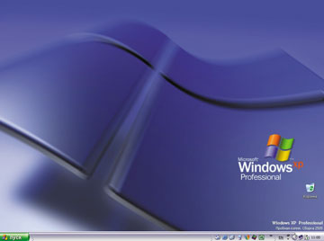
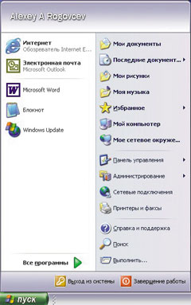
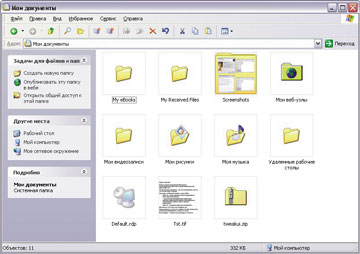
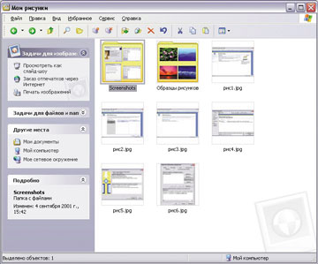
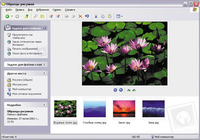
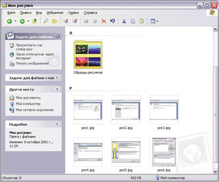
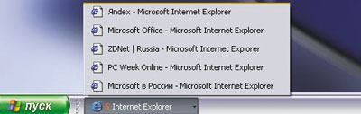
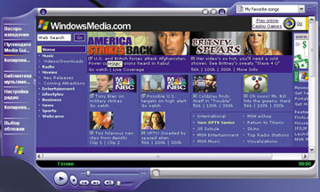
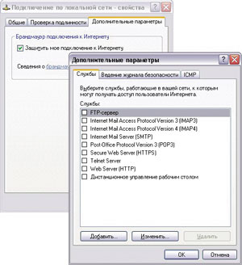
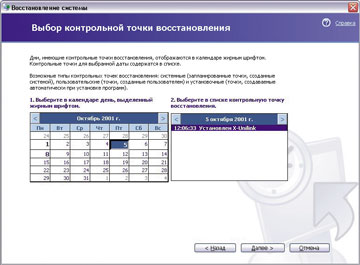

Алексей Роговцев
Я вспоминаю одно и то же -
двадцать пятое, первый день.
В. Маяковский
Свершилось! То, о чем так долго говорили представители корпорации Microsoft, представляя различные версии операционных систем (по крайней мере, начиная с Windows 98), произошло - на рынок выходит новая ОС Microsoft Windows XP, которой смогут воспользоваться как домашние, так и корпоративные пользователи.
25 октября в Нью-Йорке корпорация Microsoft официально объявит о выходе Windows XP (версий Home Edition и Professional Edition), однако ОЕМ-производители уже получили копии финальной версии ОС и устанавливают ее на свои ПК.
Новая ОС "выглядит" совершенно по-другому, в ее состав вошло гораздо больше новых функций, ориентированных на работу с цифровой графикой (фотоаппараты и видеокамеры) и цифровым аудио. Отличие домашней версии Windows XP от профессиональной заключается в том, что в первой отсутствуют средства, предназначенные для управления корпоративными ПК, а в остальном эти версии очень похожи друг на друга: и Windows XP Professional, и Windows XP Home Edition построены на основе одной архитектуры - Windows 2000.
Изменений в новой версии Windows довольно много, и, чтобы рассказать обо всех, одной статьи будет недостаточно, поэтому здесь речь пойдет лишь о наиболее значительных изменениях (знакомство основывается на работе с русской версией Windows XP Professional RC2 build 2505).
Итак, начнем, и начнем, как обычно, с установки...
Установка
Для установки Windows XP корпорация Microsoft рекомендует следующую конфигурацию ПК: процессор с тактовой частотой не ниже 233 МГц (поддерживаются Intel Pentium/Celeron и AMD K6/Athlon/Duron), память объемом не менее 128 Мбайт (минимальный объем 64 Мбайт) и не менее 1,5 Гбайт свободного места на жестком диске.
При установке новой ОС пользователь может выбрать как вариант обновления предыдущей версии, так и "чистую" установку. Обновление возможно с Windows 98/98 Second Edition или Windows Me для Windows XP Home Edition и с Windows 98/98 Second Edition, Windows Me, Windows NT 4.0 Workstation и Windows 2000 Professional - для Windows XP Professional.
В процессе установки (или обновления) системы программа может выполнить функцию динамического обновления, обратившись к Web-узлу Microsoft и скачав оттуда последние версии драйверов и других модулей, необходимых для установки системы на ПК (правда, при условии, что ваш ПК подключен к Интернету).
Сама установка системы происходит в "лучших традициях" Windows 2000 - пользователь должен ввести лишь ключ продукта и некоторую другую информацию, а все остальное выполняется без его участия и занимает не более 45-50 мин.
После установки и первого входа в систему пользователю предлагается активизировать ее. Дело в том, что в Windows XP, как и в ряде других продуктов Microsoft (Office XP и Visio 2002), реализована новая технология защиты - Microsoft Product Activation. Она предназначена для защиты программных продуктов от незаконного копирования и заключается в "привязке" ОС к оборудованию ПК, на котором она установлена.
При запуске мастера активации пользователю предлагается выбрать один из двух способов активации: через Интернет или по телефону. Активация через Интернет занимает несколько секунд, не считая времени на заполнение некоторых полей в диалоговых окнах мастера. При этом от пользователя не требуется предоставлять информацию личного характера, достаточно лишь указать страну проживания.
Если же пользователь решил активировать Windows XP по телефону, это может занять гораздо больше времени. Нужно позвонить по одному из предлагаемых телефонов в российский Центр активации, продиктовать оператору 50-значный код установки, который будет сформирован мастером, а затем ввести полученный из центра 42-значный код, и тогда система будет активирована.
После активации в конфигурацию компьютера можно будет внести не более 3--5 изменений; в противном случае потребуется повторная активация системы, которую можно выполнить только по телефону.
Новый интерфейс
Первое, что заметит пользователь Windows XP, войдя в систему, - это новый интерфейс, который значительно отличается от того, что ему (пользователю) приходилось видеть раньше: рабочий стол Windows XP практически пуст, на нем присутствует только один значок (рис. 1).
|  | Рис. 1. Интерфейс Windows XP заметно отличается от привычного.
|
Впрочем, при желании пользователь всегда может добавить на рабочий стол привычные ему значки "Мой компьютер", "Мои документы" и другие. При нажатии на кнопку "Пуск" открывается меню, которое также выглядит по-новому (рис. 2).
|  | Рис. 2. Вид меню "Пуск" тоже изменился.
|
Левая колонка меню "Пуск" содержит часто используемые программы, а в ее верхней части находятся ярлыки программ для работы с Интернетом и электронной почтой (например, Microsoft Internet Explorer и Outlook Express). В правой колонке находятся ссылки на программы, которые раньше располагались на рабочем столе, и на те, которые в других версиях Windows обычно находились в меню "Пуск". Все элементы меню "Пуск" можно настроить по желанию пользователя, можно придать ему и "классический" вид, как, например, в Windows 2000 или Windows 98.
Следующий момент - это изменения в наиболее часто используемой программе - Windows Explorer, или "Проводнике". С точки зрения интерфейса он практически не изменился (если не считать, конечно, нового вида значков на панели инструментов). А вот о новых функциях, реализованных в нем, стоит рассказать.
Первое, что хочется отметить, - появление новых панелей функций, которые реализуют концепцию "все необходимое на расстоянии одного щелчка мышкой" (рис. 3).
|  | Рис. 3. В "Проводнике" появились новые панели функций.
|
При открытии папок в правой части "Проводника" появляется панель функций, где собраны действия, которые можно выполнить как с этой папкой, так и с файлами в ней. Набор задач зависит от того, какие именно файлы находятся в открытой папке: для документов пользователю будет предложен один набор действий, а для музыкальных файлов или рисунков - другой (рис. 4).
|  | Рис. 4. Для рисунков предлагается особый набор функций.
|
Кроме того, для различных типов файлов введены новые функции, которые появляются в выпадающем меню при правом щелчке мышкой на имени файла. Например, для рисунков появилась возможность их поворота по часовой стрелке и против - раньше это выполнялось с помощью специальных программ других производителей.
В целом для рисунков в Windows XP введено довольно много новых функций: появился новый режим просмотра - "Диафильм" (рис. 5).
|  | Рис. 5. Просмотр рисунков в режиме "Диафильм".
|
Еще одно изменение связано с представлением файлов в окне "Проводника": теперь в режиме "Эскизы страниц" (Thumbnails) на пиктограммах, изображающих папки, показываются четыре первых документа из этой папки. Кроме того, к известным по предыдущим версиям Windows способам упорядочивания значков в окне "Проводника" добавилось несколько новых, из которых особенно стоит отметить упорядочивание по группам. Этот способ создает представление, аналогичное телефонной книге, когда все файлы группируются по алфавиту, а в начале каждой группы стоит метка - соответствующая буква (рис. 6).
|  | Рис. 6. Файлы рисунков, упорядоченные по группам.
|
Следует отметить и новую возможность записи файлов на компакт-диск (если, конечно, в системе есть устройство записи) с использованием стандартной функции "перетащить-и-оставить".
Следующее значительное улучшение, появившееся в Windows XP, относится к Панели задач (Task bar): в новой версии появилась возможность группировать задачи. Что это такое? В предыдущих версиях Windows каждое приложение отображалось в панели задач своим отдельным значком и при большом количестве одновременно запущенных приложений на панели задач просто не оставалось места.
Теперь при запуске нескольких экземпляров приложения, например, Internet Explorer, они группируются на панели задач, оставляя на ней достаточно места, но тем не менее предоставляя пользователю все возможности работы с приложениями (рис. 7).
|  | Рис. 7. Сгруппированные задачи на Панели задач.
|
Еще одна возможность, упрощающая работу с панелью задач, - это возможность скрытия неиспользуемых значков в области уведомлений (System Tray). Когда в этой области "накапливается" много значков, те из них, к которым пользователь обращается довольно редко, будут скрыты, однако их всегда можно открыть, нажав на специальную стрелку, появившуюся в области уведомлений.
Работа с аудио и видео
Одна из возможностей Windows XP, которая, вероятно, станет главной "приманкой" для домашних пользователей, - это новые средства работы с аудио- и видеоинформацией, реализованные в проигрывателе Microsoft Windows Media Player 8.0 (рис. 8).
|  | Рис. 8. Проигрыватель Windows Media Player 8.0.
|
Как и предыдущие версии, Windows Media Player 8.0 (WMP) позволяет проигрывать аудиокомпакт-диски, копировать их (или выбранные записи) на жесткий диск в формате WMA, редактировать информацию о звуковом файле и т. д. С помощью WMP можно и записать полюбившиеся файлы на компакт-диск или перенести их портативный плейер. Кроме аудио, WMP позволяет воспроизводить видеозаписи с DVD-дисков или потоковое видео. Помимо проигрывателя Windows Media, в состав Windows XP включена программа работы с видеозаписями Windows Movie Maker, впервые появившаяся в Windows Me.
Работа в сети
Возможности работы в сети, реализованные в Windows XP, подробно рассматриваются в этом номере в статье "Сетевые средства Windows XP", поэтому здесь мы отметим лишь некоторые интересные моменты.
Для корпоративных пользователей важно, что в Windows XP появился брандмауэр подключения к Интернету, с помощью которого можно защитить компьютер от несанкционированного доступа (рис. 9).
|  | Рис. 9. Появился брандмауэр подключения к Интернету.
|
Конечно, эта программа не может заменить полноценные брандмауэры, поставляемые другими производителями, но с ее помощью все-таки можно решить определенные задачи защиты от вмешательства извне.
Что же касается домашних пользователей, то настройка работы в домашней сети существенно упростилась: для этого в состав Windows XP включен Мастер настройки сети (Network Setup Wizard), который автоматически конфигурирует машину для работы в сети, предлагает заранее заданные схемы для ряда сценариев использования ПК, а также позволяет настраивать совместное использование файлов и папок и доступ в Интернет.
Кроме того, в Windows XP появилась возможность переключать пользователей, не закрывая отдельные приложения; правда, это доступно лишь в том случае, если вы работаете на автономном ПК, не подключенном к домену корпоративной сети. Благодаря новой функции можно войти в систему под другим именем, выполнить необходимые действия, а потом вернуться в прежнее состояние.
Например, если сын поглощен игрой, а папе срочно нужно отправить письмо коллеге, то теперь - в Windows XP - не придется заставлять ребенка прекращать игру; достаточно лишь на время переключить пользователя, отправить письмо, а потом выйти из своего профиля, и ребенок сможет продолжить игру.
Обеспечение надежности
Как уже говорилось, в основу Windows XP легло хорошо зарекомендовавшее себя ядро Windows 2000. Однако при разработке новой ОС в Microsoft не стали останавливаться на достигнутом и ввели в состав системы ряд новых функций, которые еще больше улучшают ее стабильность и надежность.
Во-первых, в Windows XP в дополнение к известным функциям защиты системных файлов (Windows File Protection) появилась функция автоматического восстановления системы, благодаря которой пользователь всегда может вернуть свою систему в работоспособное состояние. Восстановление реализовано с помощью следующих новых функций: откат драйверов и собственно восстановление системы.
Откат драйверов. Если установка какого-либо драйвера привела к нарушению нормального функционирования системы, то пользователь всегда может переустановить предыдущую версию драйвера этого устройства.
Восстановление системы. С помощью специальной программы пользователь может "запомнить" состояние системы (например, перед установкой какого-нибудь пакета), а потом восстановить его в случае необходимости (рис. 10). Кроме этого, система сама автоматически фиксирует изменения параметров в специальном журнале, предоставляя пользователю возможность отменить это изменение, если оно привело к нежелательным изменениям в работе системы.
|  | Рис. 10. Программа восстановления системы позволяет выбрать исходную точку для восстановления.
|
В Windows XP также обеспечивается режим совместимости для приложений, разработанных для предыдущих версий Windows. Этот режим позволяет эмулировать для "устаревшего" приложения среду Windows 95, 98, NT 4.0 или 2000.
Служба Windows Update (а точнее, Automatic Update) дает пользователю возможность автоматически обновлять системные файлы, загружая все необходимое со специального Web-узла. Режим автоматического обновления можно отменить или настроить таким образом, чтобы пользователь сам принимал решение о необходимости загрузки появившихся обновлений системы.
В Windows XP полностью переработана справочная система - теперь вся необходимая информация, включая данные о совместимости оборудования, собрана в одном справочном центре. Пользователь может настроить систему так, чтобы получать помощь в режиме online от удаленного помощника, в качестве которого может выступать любой квалифицированный специалист (например, инженер службы технической поддержки компании).
Производительность
В Windows XP существенно переработаны функции, обеспечивающие повышение производительности. Например, новая ОС "наблюдает" за использованием приложений и перемещает наиболее часто используемые файлы ближе друг к другу на диске, что уменьшает время поиска файлов и их загрузку. Кроме того, сокращено время перехода в режимы hibernate и standby, а также время выхода их этих режимов.
Что же касается общих показателей производительности, то по результатам тестирования, приведенным в обзорах ZDNet (http://www.zdnet.com/products/stories/reviews/0,4161,2807905,00.html), Windows XP Professional имеет практически ту же (или несколько большую) производительность, что и Windows 2000 Professional, превосходя Windows Me не менее чем на 10%.
* * *
Конечно, в статье описаны не все новые возможности Windows XP, но даже этот небольшой обзор позволяет сделать вывод о том, что новая ОС позволит значительно упростить работу пользователей и повысить ее эффективность.
Разумеется, решение о том, переходить на новую систему или нет, будет приниматься не только на основе статей и обзоров, но и исходя из экономической целесообразности такого перехода. В связи с этим стоит отметить, что стоимость новой системы находится в пределах от 99 долл. для обновления Windows XP Home до 299 долл. для полной версии Windows XP Professional (цены для английских версий Windows XP).
Более подробную информацию об операционной системе Microsoft Windows XP можно найти по адресу http://www.microsoft.com/windowsxp/ и http://www.microsoft.com/rus/windowsxp/